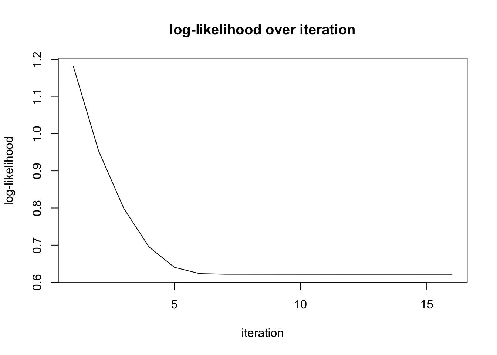
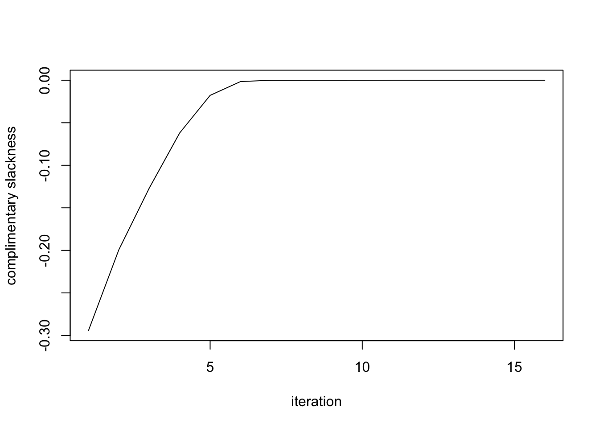

In this documentation, we will analyze convergence of SQP algorithm.
getwd();## [1] "/Users/ppsadmin/git/mixopt/analysis"rjulia::julia_init();
rjulia::r2j(getwd(),"working_directory");
rjulia::julia_void_eval('cd(working_directory[1])');get_sample = function(n,seed=2017){
set.seed(seed)
n1 = floor(n/2)
z = c(rnorm(n1),4*rt(n-n1,df=6))
z = z[order(abs(z))]
return(z)
}
get_matrix_lik = function(z,m = 1.1){
data = ashr::set_data(z,1)
grid = ashr:::autoselect.mixsd(data, mult=m, mode=0, mixcompdist="normal", grange=c(-Inf,Inf))
grid = c(0,grid)
k = length(grid)
g = ashr::normalmix(rep(1/k,k),rep(0,k),grid)
llik <- t(ashr:::log_comp_dens_conv.normalmix(g,data))
L = llik - apply(llik, 1, max)
L = exp(L)
return(L)
}We sample from the distribution \(z\sim 0.5 N(0,1) + 0.5 t_{6,4}\).
z = get_sample(100000);
matrix_lik = get_matrix_lik(z, m = 1.1);
rjulia::r2j(matrix_lik,"matrix_lik");We pass the likelihood matrix to Julia and then run the code.
rjulia::julia_void_eval('include("conv_analysis.jl")');
#' rjulia::julia_void_eval('temp = sqp_conv_analysis(matrix_lik, eps, tol, sptol, maxiter, option)');
#' @param matrix_lik : n by k likelihood matrix ::Array{Float64,2}
#' @param eps : small constant (1e-8 default) that being used for avoiding numerical issue
#' @param tol : tolerance for optimality, i.e. convergence check
#' @param sptol : tolerance for enforcing sparsity
#' @param maxiter : maximum iteration number of the outer loop, i.e. maximum number of subproblem solved
#' @param option : TRUE if don't terminate until maxiter
rjulia::julia_void_eval('temp = sqp_conv_analysis(matrix_lik, 1e-8, 1e-8, 1e-3, 30, false)');The following is log-likelihood (or objective value, equivalently) plot over iterations. Here log-likelihood is up to constant.
objectives = rjulia::j2r("temp[2]");
plot(objectives, type = 'l', xlab = "iteration", ylab = "log-likelihood");
title("log-likelihood over iteration");
slacks = rjulia::j2r("temp[3]");
plot(slacks, type = 'l', xlab = "iteration", ylab = "log-likelihood");
rjulia::j2r("temp[3]")## [1] -2.943654e-01 -1.988691e-01 -1.267632e-01 -6.217165e-02 -1.756404e-02
## [6] -1.612758e-03 -3.567722e-05 -3.774834e-06 -8.505634e-07 -7.355723e-07
## [11] -7.348545e-07 -7.346191e-07 -7.345425e-07 -7.346838e-07 -7.347630e-07
## [16] -7.346415e-07 -7.344389e-07 -7.346531e-07 -7.345000e-07 -7.343590e-07
## [21] -7.345419e-07 -7.346072e-07 -7.346596e-07 -7.347117e-07 -7.346427e-07
## [26] -7.345400e-07 -7.345337e-07 -7.346304e-07 -7.346211e-07This R Markdown site was created with workflowr